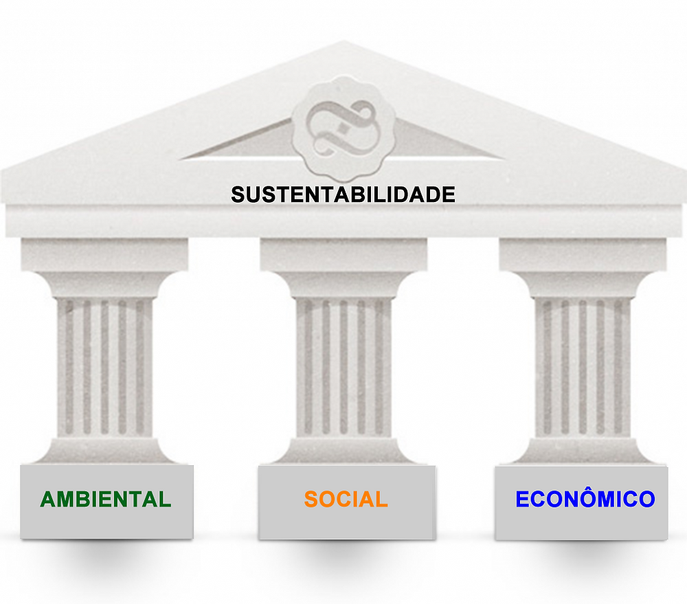

Sustentabilidade
O que é Sustentabilidade ?
Nos últimos anos, o termo "sustentabilidade" vem sido cada vez mais popular em nossa sociedade, mas afinal do que isso se trata?
Podemos resumir em poucas palavras, é o desenvolvimento que não A sustentabilidade consiste em atender às necessidades das gerações atuais sem comprometer as necessidades das gerações futuras, garantindo ao mesmo tempo um equilíbrio entre o crescimento econômico, o respeito pelo meio ambiente e o bem-estar social.
Tipos de Sustentabilidade
Como dito acima, sustentabilidade pode ser e dever ser dividida em vários grupos, tais como:
- Empresarial: Engloba a postura responsavel da empresa com valores ambientais e socias
- Social: Engloba as pessoas e suas condições de vida, como educação, saúde, violência, lazer, dentre outros aspectos.
- Econômica: Engloba produção, distribuição e consumo de bens e serviços. A economia deve considerar a questão social e ambiental.
- Ambiental: elacionado com a produção, distribuição e consumo de bens e serviços. A economia deve considerar a questão social e ambiental.
Sustentablidade econômica
A sustentabilidade empresarial pode ser vista como um conjunto de ações que uma empresa toma, visando o respeito ao meio ambiente e o desenvolvimento sustentável da sociedade. Logo, para que uma empresa seja considerada sustentável ambientalmente e socialmente, ela deve adotar atitudes éticas, práticas que visem seu crescimento econômico (sem isso ela não sobrevive) sem agredir o meio ambiente e também colaborar para o desenvolvimento da sociedade. Um exemplo de Sustentabilidade Empresarial seria de: Quando uma empresa de cadernos usa apenas papel reciclável na confecção de seus produtos, e ao derrubar as árvores, recultiva-as para que não aja desmatamento.
Sustentabilidade Social
A Sustentabilidade Social deve contemplar as condições para que todas as pessoas tenham os recursos necessários para uma vida saudável e de boa qualidade. Nessa definição, encontra-se implícita a redução ou erradicação da pobreza.
Sustentabilidade Econômica
Sustentabilidade econômica é um conjunto de práticas econômicas, financeiras e administrativas que visam o desenvolvimento econômico de um país ou empresa, preservando o meio ambiente e garantindo a manutenção dos recursos naturais para as futuras gerações. O grande desafio de uma política econômica, seja empresarial ou governamental, é gerar crescimento econômico, lucro, renda e criar empregos sem ocasionar danos ao meio ambiente.
Sustentabilidade Ambiental
A sustentabilidade ambiental é um termo mais geral, se fazendo menção da capacidade de suporte, resiliência e resistência dos ecossistemas. Pode ser ainda definida como um processo de avaliação entre a economia, a sociedade e a natureza.
Os Três Pilares da Sustentabilidade

A sustentabilidade é um conceito que está fortemente relacionado com três pilares: social, ambiental e económico. Juntos, eles asseguram a sobrevivência do nosso planeta, permitindo um desenvolvimento sustentável em todas essas esferas.
Pilar Social
O desenvolvimento sustentável deverá promover igualdade de direitos e oportunidades para todos, que conduza um maior equilíbrio e justiça na distribuição da riqueza e o acesso aos recursos e serviços essenciais para uma vida digna, como a educação, saúde, alimentação e habitação, em alinhamento com os Direitos Humanos.
Pilar Ambiental
Só poderemos estar perante um “desenvolvimento sustentável”, quando as sociedades conseguirem prosperar em conjunto com a natureza e não à conta da mesma. Para isso, devemos desenvolver novas formas de atuação que respeitem os limites do nosso planeta e que não impliquem a degradação dos sistemas naturais e a redução da biodiversidade.
Pilar Econômico
A jornada para o desenvolvimento sustentável implica a capacidade de investir em medidas que nos permitam chegar a estes objetivos, pelo que a capacidade de ser economicamente eficaz torna-se determinante. Através do investimento inteligente, possibilitado pela capacidade de ser economicamente eficaz, poderão criar-se novas formas de atuar que gerem valor para todo o sistema, ao invés de criam valor apenas por lado, enquanto destroem pelo outro.
Benefícios da Sustentabilidade:
- Melhora da qualidade de vida.
- Preservação da biodiversidade e dos recursos naturais.
- Diminuição dos desastres ambientais.
- Adoção de hábitos mais saudáveis e conscientes.
- Empresas mais responsáveis socialmente.
- Redução da desigualdade social e de todas as formas de preconceito.
- Segurança alimentar.
- Melhora da economia devido à ecoeficiência.
Os Desafios da Sustentabilidade
Os principais desafios da sustentabilidade não são de agora, mas de anos, décadas e séculos atrás, que só se agravaram com o passar do tempo. Chegamos a um patamar em que não há mais volta. Ou mudamos a maneira de nos relacionar com o meio ambiente ou as futuras gerações vão ter sua qualidade de vida afetada. A principal dificuldade está em encontrar o equilíbrio entre desenvolver práticas mais sustentáveis sem comprometer o crescimento econômico. Muitos países não possuem a condição de recorrerem a opções mais renováveis, tendo que recorrer a antigos meios de produção.